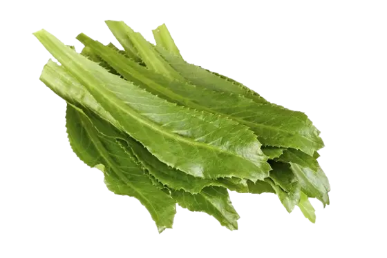

ManuscriptPlant GrimoirePlant GrimoireSpiritweed☆SaveOriginCentral AmericaSouth AmericaWest IndiesScientific NameEryngium foetidumUSDA Hardiness Zone9a9b10a10b11a11bTypeHerbAlso calledCulantro, Mexican Coriander, Long Coriander, Sawtooth Coriander, Recao, Shadow BeniRituals1🔥Caribbean Ghost Fumigation Spell

 Spiritweed
Spiritweed